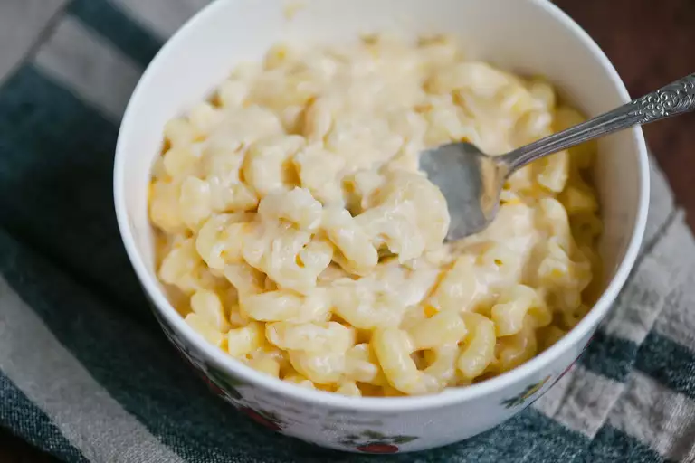

Slow Cooker Mac And Cheese

Description
An ooey gooey masterpiece that combines macaroni and cheese to create the perfect dish!
Ingredients
- 1 (16 ounce) package elbow macaroni
- 1/2 butter
- salt and pepper to taste
- 1 (16 ounce) package shredded Cheddar cheese, divided
- 1 (5 ounce) can evaporated milk
- 2 eggs, well beaten
- 2 cups whole milk
- 1 (10.5 ounce) can condensed Cheddar cheese soup (such as Campbell's®)
- 1 pinch paprika, or as desired (Optional)
Steps
- Fill a large pot with lightly salted water and bring to a rolling boil. Stir in macaroni and return to a boil. Cook pasta uncovered,
stirring occasionally, until tender yet firm to the bite, about 8 minutes. Drain and transfer pasta to a slow cooker.
- Add butter to pasta and stir until melted; season with salt and pepper. Sprinkle about 1/2 of the Cheddar cheese over pasta and stir.
- Whisk evaporated milk and eggs together in a bowl until smooth; stir into pasta mixture.
- Whisk milk and condensed soup together in a bowl until smooth; stir into pasta mixture.
- Sprinkle remaining cheese over pasta mixture; garnish with paprika.
- Cook on Low for 3 hours.
- Serve hot and enjoy!